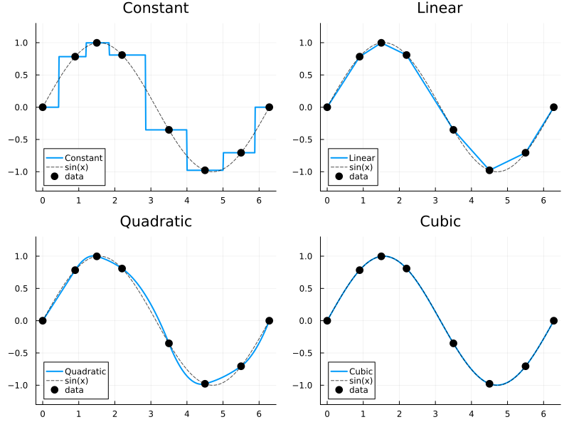
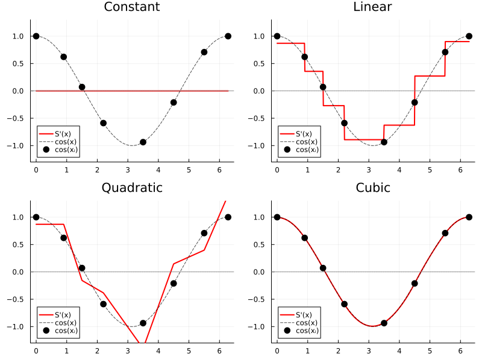
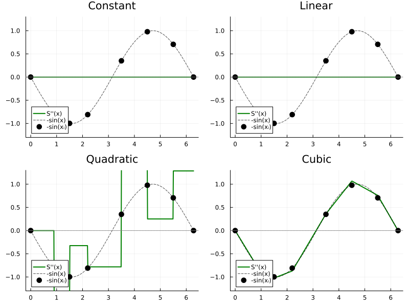

Interpolation Overview
FastInterpolations.jl provides four interpolation methods with increasing smoothness. All methods support analytical 1st and 2nd derivatives.
| Method | Continuity | 1st Derivative | 2nd Derivative |
|---|---|---|---|
| Constant | C⁻¹ (discontinuous) | 0 | 0 |
| Linear | C⁰ (continuous) | Piecewise constant | 0 |
| Quadratic | C¹ (smooth) | Continuous | Piecewise constant |
| Cubic | C² (smooth) | Continuous | Continuous |
API Styles
FastInterpolations.jl provides two API styles designed for maximum performance through strict type stability and compile-time dispatch.
1. One-shot API (Recommended)
Best when y values change frequently but the grid x remains fixed — the same x-grid is reused but y-values change over time.
# x, y: known data points (target)
# xq: query points → yq: interpolated values
yq = constant_interp(x, y, xq)
yq = linear_interp(x, y, xq)
yq = quadratic_interp(x, y, xq)
yq = cubic_interp(x, y, xq)Example: Simulation where y evolves each timestep
x = range(0.0, 10.0, 100)
out = zeros(N_query)
for step in 1:1000
y = compute_new_values(step) # y changes every iteration
cubic_interp!(out, x, y, xq) # zero-allocation ✅
endAfter a single warm-up call, the One-shot API is guaranteed zero-allocation for repeated calls on the same grid—perfect for high-performance simulations.
2. Interpolant API
Best when both x and y are fixed — pre-computes coefficients once for fast repeated evaluation.
itp = cubic_interp(x, y) # construct once
itp(xq) # evaluate many timesExample: Lookup table with fixed data
x = range(0.0, 10.0, 100)
y = sin.(x)
itp = cubic_interp(x, y) # pre-compute once
for query in queries
result = itp(query) # zero-allocation ✅
endVisual Comparison
All examples use the same sparse, non-uniform grid interpolating sin(x):
using FastInterpolations
x = [0.0, 0.9, 1.5, 2.2, 3.5, 4.5, 5.5, 2π] # 8 non-uniform points
y = sin.(x)
xq = range(0, 2π, 500) # query points0.0:0.012591553721802777:6.283185307179586Value: $S(x)$
constant_interp(x, y, xq) # step function
linear_interp(x, y, xq) # piecewise linear
quadratic_interp(x, y, xq) # C¹ smooth
cubic_interp(x, y, xq) # C² smooth
First Derivative: $\frac{dS}{dx}$
constant_interp(x, y, xq; deriv=1) # always 0
linear_interp(x, y, xq; deriv=1) # piecewise constant
quadratic_interp(x, y, xq; deriv=1) # continuous
cubic_interp(x, y, xq; deriv=1) # smooth
Second Derivative: $\frac{d^2S}{dx^2}$
constant_interp(x, y, xq; deriv=2) # always 0
linear_interp(x, y, xq; deriv=2) # always 0
quadratic_interp(x, y, xq; deriv=2) # piecewise constant
cubic_interp(x, y, xq; deriv=2) # continuous